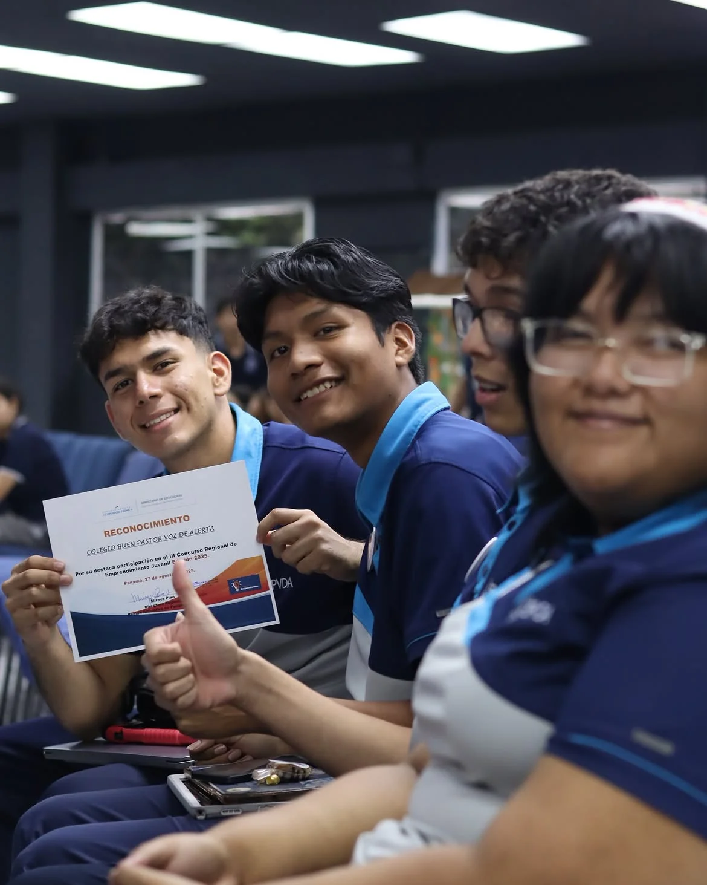
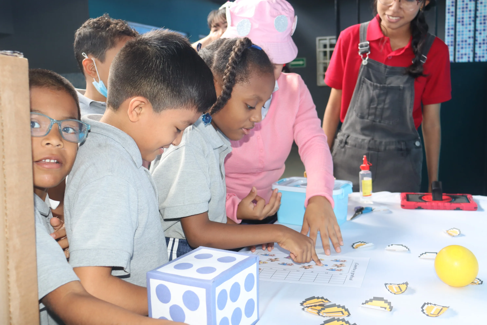
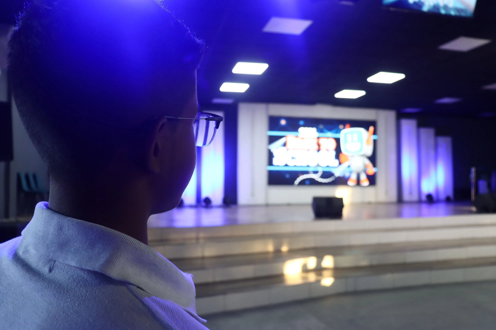
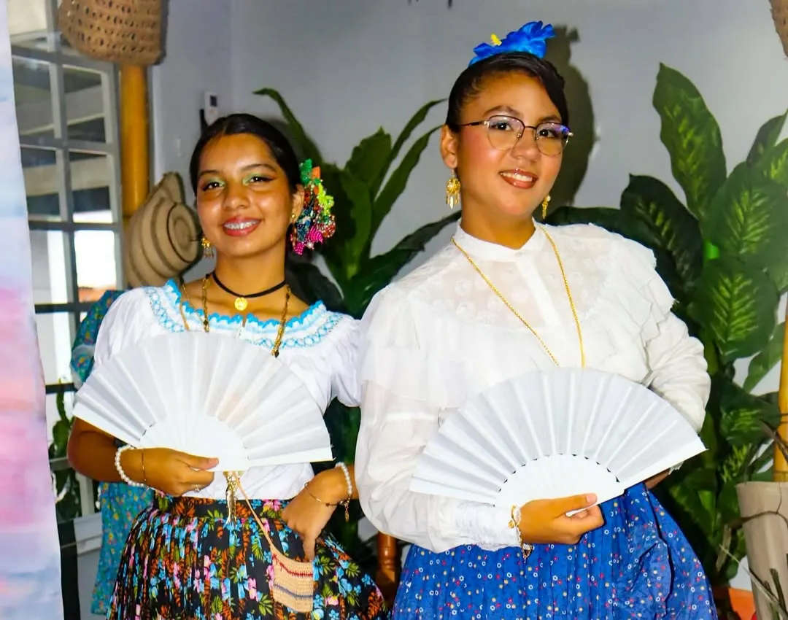

Fundamento Cristocéntrico
Formamos la conciencia ética y moral a través de la vivencia diaria de valores bíblicos: respeto, honradez, amor al prójimo y devocionales que fortalecen la fe de cada hogar.

Más de dos décadas formando con amor y rigor pedagógico en 24 de Diciembre, guiando a cada estudiante para descubrir sus dones, cultivar carácter cristiano y alcanzar su máximo potencial académico.

El Colegio Buen Pastor Voz de Alerta (BPVDA) es una institución educativa comprometida con la formación integral de niños y jóvenes en el corregimiento de 24 de Diciembre, Ciudad de Panamá. Nuestro modelo une la solidez académica con principios cristianos inquebrantables, preparando a cada generación para afrontar los desafíos universitarios y sociales con solvencia moral y profesional.
Creemos firmemente en una educación personalizada, donde cada estudiante es conocido por su nombre, acompañado por docentes con vocación pastoral y respaldado por un entorno de sana convivencia y disciplina con propósito.
«Instruye al niño en su camino, y aun cuando fuere viejo no se apartará de él.»Proverbios 22:6 · Principio Rector BPVDA
Una estructura formativa coherente donde lo espiritual, lo académico y lo familiar se complementan para garantizar el desarrollo pleno de nuestros alumnos.
Formamos la conciencia ética y moral a través de la vivencia diaria de valores bíblicos: respeto, honradez, amor al prójimo y devocionales que fortalecen la fe de cada hogar.
Un currículo riguroso y actualizado que integra plataformas educativas interactivas (SAI, Progrentis, Matific, Edvoice), robótica educativa y reforzamiento científico continuo.
Entendemos que la educación florece cuando el colegio y la familia caminan en mutuo acuerdo. Mantenemos canales directos de orientación, escuelas para padres y puertas siempre abiertas.
Momentos reales capturados en nuestro campus: ciencia, devoción, esfuerzo académico y compañerismo fraterno.




Te invitamos a visitar nuestras instalaciones en 24 de Diciembre, dialogar con nuestro equipo directivo y descubrir de cerca una propuesta educativa pensada para el futuro de tus hijos.